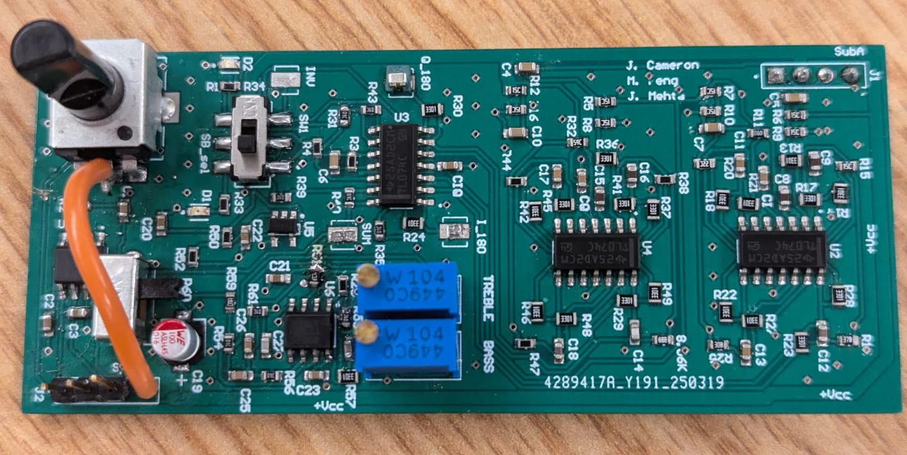
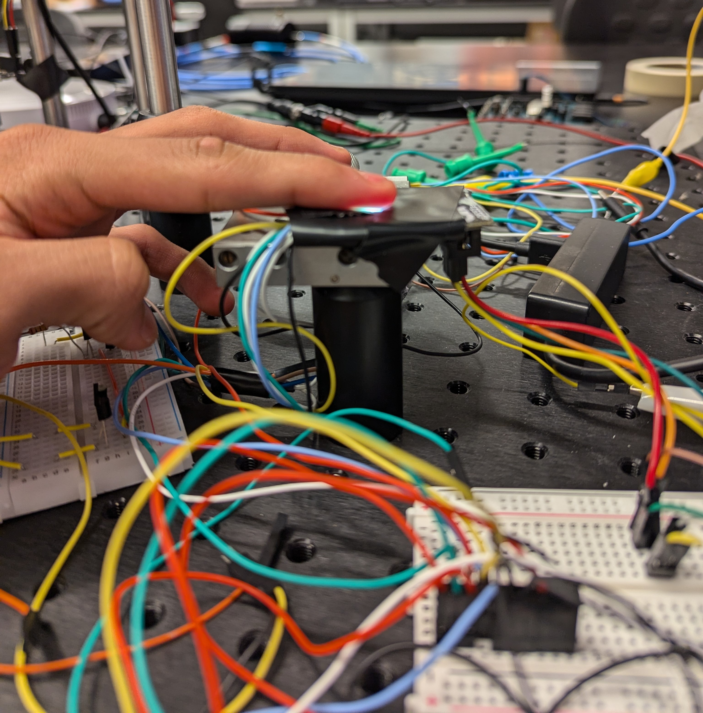

About Me
I'm an Electrical Engineering student at the University of Toronto and the Electronics Lead for
the U of T Formula Racing Team.
My technical experience spans embedded systems, signal processing, and PCB design. From
optimizing health-monitoring firmware in wearable devices to building wireless communication
between FPGAs, I thrive in hands-on engineering environments and love turning complex challenges
into elegant solutions.
Formula Student Accumulator Controller Module (ACM)

Designed a 6-layer battery management ECU with 600 V isolation, HV sensing, and isoSPI links; optimized signal
integrity through controlled impedance routing and isolation practices to ensure robust HV monitoring and control. Manufactured spare ACM PCB responsible for managing the high-voltage system for a FSAE car. This
involved hand soldering over 400+ SMD
components. Further, Testing was done with custom C++ embedded firmware.
Formula Student STM32 based Front Controller R&D
Conducted R&D to choose a STM32 based MCU for the 2026 season. We decided to use the STM32G47
series. This dev board includes USB programming, USB->UART bridges (USB Micro and USB C), CAN
controllers, LED drivers, STM32 based internal buffer experimentation and 5V tolerant pins to
prevent the use of level shifters. Overall we saw a 30% reduction in BOM cost.
Formula Student Rear Data Acquisition Board
Independently designed schematics and 4-layer PCB layout in Altium for a data
acquisition board integrating 100+ components. Communicates with
ECUs over CAN and acquires real-time data from 16+ analog and digital sensors.
Single sideband Radio Demodulator

Designed a high-performance single sideband demodulator with 24 dB sideband rejection, tone
control, and output amplification. Simulated in LTspice, built in Altium, and tested with a
rooftop antenna to receive amateur radio signals across 3 continents.
Smart Ring Algorithm Development

Worked on Algorithm development for a smart ring device. This included researching various
digital processing algorithms such as Butterworth filters, Chebyshev filters, and Fourier
Transforms. Further, I developed a calibration algorithm for the AS7352 chip, as well as a heart
rate, blood oxygenation, and current calibration algorithm.
Asynchronous Multi-FPGA Communication
Developed a custom protocol enabling a central FPGA to interface with
multiple peer devices. The system transmits data using distinct sound frequencies to represent
binary bits, and ACK and NACK signals.
Brick Breaker Game on DE1-SoC FPGA
Designed an interactive game using Verilog and VGA output. It includes keyboard/accelerometer
input and real-time gameplay features
EV Battery Research Paper
Literature review on the thermal effects on comparing different Li-Ion chemistries in EVs,
focusing on performance,
safety, and lifecycle optimization.

A fun Gorilla-themed twist on the Google Dino Game with a banana-growth mechanic that adds
dynamic gameplay complexity.